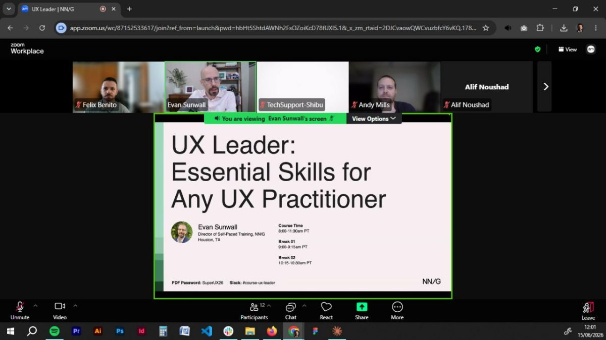
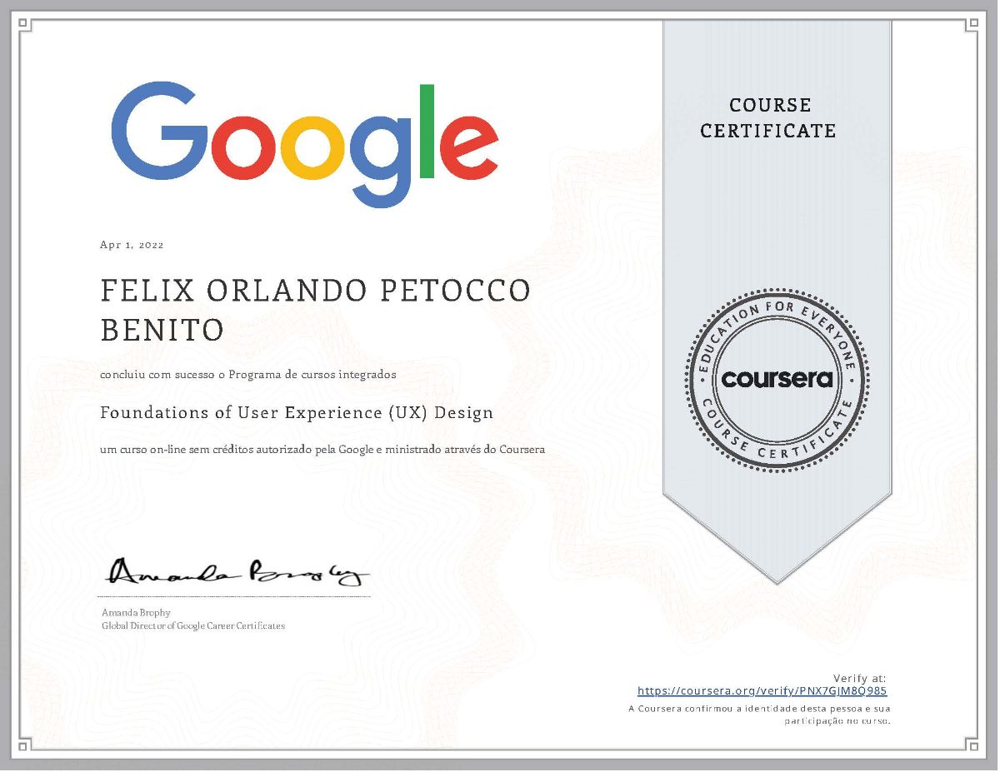
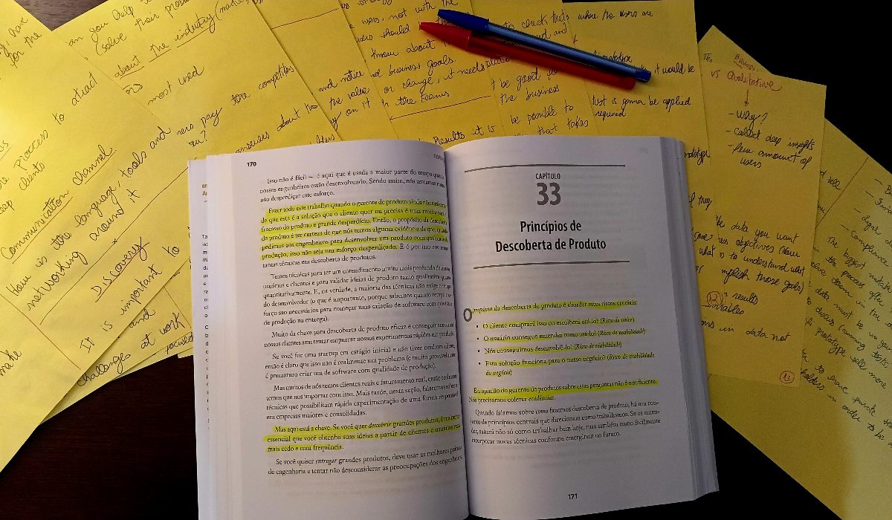

Leading design and brand strategy, from AI products to marketing and creative direction, for global teams.
18 years designing for Audi, Coca-Cola and Kraft Heinz.
Design and brand lead.
18+ years across consumer, enterprise B2B, automotive and industrial product.
Design and brand strategy, AI product design, design systems, team leadership.
Working with teams across LATAM, EU and US.
Five projects that shaped how I lead.
From global B2B platforms at Coca-Cola and Audi to industrial software and consumer apps, I led these projects end to end, applying AI in several of them to move faster from research to a shipped decision.
My process,
end to end.
From the first survey to the launch email, one design voice across the whole thing.
{{ active.title }}
{{ active.body }}
{{ active.highlight }}
Eighteen years, one through-line.
The full CV lives here. This is the shape of it.
Always learning, always shipping
It started with a degree in advertising, where audience, narrative and brand are the entire craft. A postgraduate degree in design turned that craft into systems and products. An MBA in strategic communication added the business lens, positioning, framing, the discipline of saying no. Right now I am working toward my NN/g UX Certification, and I keep studying English, Spanish and Portuguese so the work lands wherever the team happens to be.



I stay in constant development: taking courses and workshops, reading and summarizing books by hand, which is how I hold on to what I learn.
From the people I’ve worked alongside.
Designers, developers, PMs and clients who’ve seen my work close-up. Pulled from LinkedIn recommendations.
{{ q.text }}
Worked with.
Selected global, regional and startup clients across automotive, FMCG, agriculture, retail and biotech.
Where the creativity comes from.
The interesting design decisions don't arrive at a desk. They show up on a road, in a museum room, in a café across the world.
Exploring countries by road and on foot, hiking trails and staying as close to nature as I can, looking for the light, the color, the angle.
Exhibitions are where I study composition, contrast and restraint, the master of light and shadow, still teaching.
I work from cafés all over the world. The ambient noise, the rotating light, the strangers, all of it ends up in the work.
- Design lead & head of design roles
- AI product design engagements
- Design audits & recommendations
- Speaking & workshops